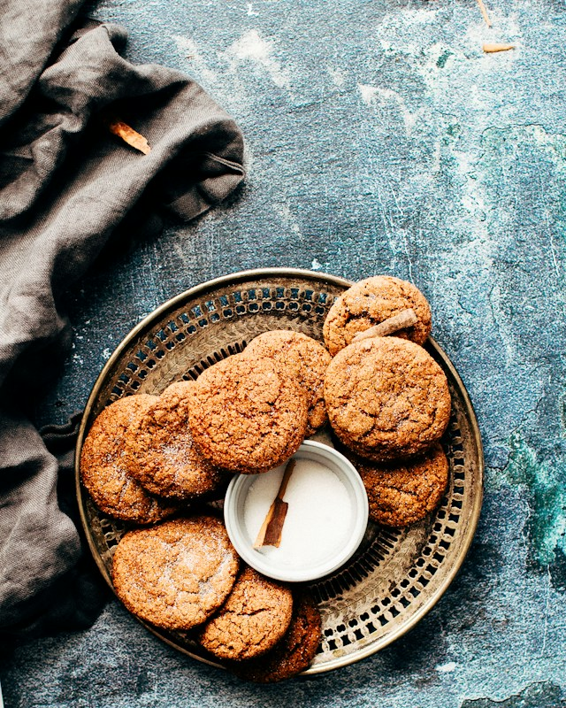

Brown Sugar Cookies Recipe
Soft brown sugar cookies – this easy cookie recipe has only brown sugar – they’re so flavorful, soft, delicious and stay soft for days!
Ingredients
- ¾ cup (170g) unsalted butter, softened
- 1 ¼ cup (250g) packed brown sugar
- 1 large egg
- 1 teaspoon vanilla extract
- ½ teaspoon baking soda
- ½ teaspoon salt
- 2 cups (248g) all-purpose flour
Instructions
- Preheat oven to 350°F. Line 2 cookie sheets with parchment paper or silicone baking mats.
- Cream butter and brown sugar until fluffy in the bowl of a stand mixer fitted with the paddle attachment.
- Beat in egg and vanilla extract. Mix in baking soda and salt. Slowly mix in flour.
- Scoop 2 tablespoon balls of cookie dough onto prepared cookie sheets, 2-inches apart. I like to roll them between my palms to form a prettier ball (and a prettier cookie).
- Bake for 10-14 minutes or until no longer glossy on top and light golden around the edges.
- Cool 10 minutes on cookie sheet before removing.
- Store in an airtight container for several days or freeze for up to 2 months.